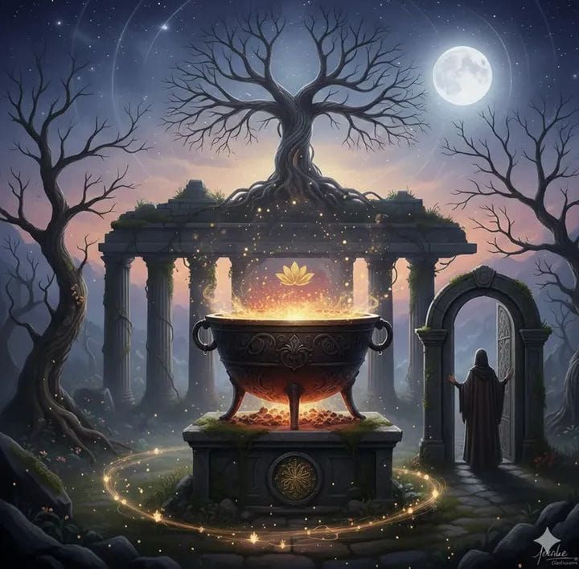

Finir avant de commencer : l’art discret des fins de cycle

Le dernier jour de l’année possède une texture particulière. Un entre-deux. Une zone de « vide fertile » où l’on n’est plus tout à fait dedans, et pas encore ailleurs.
Cette année, l’instant est d’autant plus dense qu’il ne clôture pas seulement douze mois, mais un cycle de neuf ans. En Gestalt-thérapie, comme dans de nombreuses traditions, le chiffre neuf marque l'aboutissement, la maturation d'une expérience qui a fait son chemin jusqu'au bout — parfois dans la clarté, parfois dans la confusion.
Avant même de penser à « la suite », il y a quelque chose d’essentiel à honorer : la fin.
Finir n’est pas renoncer : clore la « forme »
Nous avons appris à regarder les fins avec méfiance, comme si clore, c’était échouer. Comme si ce qui n’a pas abouti devait être jeté avec les restes de l’année.
En Gestalt, nous savons pourtant combien une forme a besoin d’être complétée pour laisser place à une autre. Ce qui n’a pas trouvé sa fin reste en suspens : c'est ce que nous appelons une « situation inachevée ».
Les manques, les détours et les projets avortés ne sont pas des déchets. Ils sont souvent des tentatives de contact, des manières de se rapprocher de soi.
L'Alchimie du passage : de la calcination à l'or
Clore un cycle de neuf ans est un véritable processus alchimique.
- L'Œuvre au Noir (Nigredo) : accepter de regarder nos scories, nos pertes et nos échecs.
- La Distillation : ne garder que la quintessence de l'expérience.
- L'Or philosophal : transformer les années vécues en conscience.
La symbolique du Neuf
Le neuf représente l’achèvement avant un nouveau commencement. Quitter un cycle, c’est monter d’un tour de spirale.
Le retrait fertile
Avant toute nouvelle poussée, la vie se retire. Ce temps invite à laisser décanter.
- Qu’est-ce qui demande à être reconnu avant d’être dépassé ?
- Qu’est-ce qui a besoin d’un « merci », même discret ?
Intentions plutôt que résolutions
Les intentions parlent de direction intérieure plutôt que de correction.
Le réveillon comme passage
Posez-vous ces deux questions :
- Qu’est-ce que je choisis de laisser dans le creuset ?
- Quelle est l’essence, « l’or », que j’emporte dans le nouveau cycle ?
Pour ce soir seulement…
Il n’y a rien à comprendre de plus, rien à améliorer, rien à décider.
Souviens-toi que ce que tu as vécu est la matière première de ta transformation.
Ce soir, autorise-toi à être exactement là où tu es. Ni en retard, ni en avance.
Emporte cette douceur avec toi, comme une confiance silencieuse dans la forme qui cherche déjà à naître.